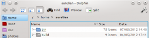

It's been a long time since I last wrote about user interface mistakes in KDE applications. Here is a new addition to this series.
Starting with KDE 4.0, KDE applications ship with toolbars containing both icons and texts.
This setup makes it easier to understand the action associated with a toolbar button. Additionally, buttons with icon and text provide bigger mouse targets.
The price to pay for this is toolbars can become quite wide, to the point where they barely fit on 1024 x something screens (think netbooks or video projectors). To make matters worse, translations often increase text widths: French and German translations for example are known for being quite verbose.
If you maintain a KDE (or Qt) application, here are some simple steps you can follow to reduce the width of your toolbars without compromising too much.
Step #1: Do you really need that button?
This first step is quite obvious: go through your toolbars and check if some of the buttons present in the default configuration can be removed. If they are seldom used, maybe it is OK if their action is only reachable from the menubar?
You probably made such decisions while the application was created. Nevertheless it's a good idea to revisit those decisions from time to time, based on your increased knowledge of the way your application is used.
Step #2: Icon-only buttons Hide the text of some buttons. Since Qt 4.6, QAction has a "priority" property which defaults to QAction::NormalPriority. Set it to QAction::LowPriority to get an icon-only button in your toolbar. Peter Penz did it for Dolphin, I did the same for Gwenview. It obviously saves quite some horizontal space.  Dolphin ToolbarI couldn't come with strong rules to decide whether a button should show text or not. You have to use your gut feeling here. Nevertheless here are some hints to give you an idea of situations where it may make sense to use icon-only buttons.
Remember those are just hints: they may not make sense for your application. Additionally, make sure not to overdo it to the point of having only icon-only buttons!
Step #3: Shorten those texts!For the remaining buttons which kept their texts, try to shorten the text to one or two words only, put a longer text in the tooltip. This serves two purposes:
When defining the action text, make use of KUIT: mark the text using "@action:intoolbar", This should give a hint to the translator that this string should be kept short.
When defining the action tooltip, remember the HIG says tooltips should be written using sentence capitalization, not title capitalization. QAction is not being very helpful there: when no tooltip is set, it falls back to using the "text" property as a tooltip, and the "text" property uses title capitalization :/. That is one more good reason to define tooltips yourself.
ConclusionString freeze for KDE SC 4.9 starts on May 19th, so if your application is in KDE SC, you still have a few days left to check if your application toolbar could be improved!
{kind=link}
{kind=link}